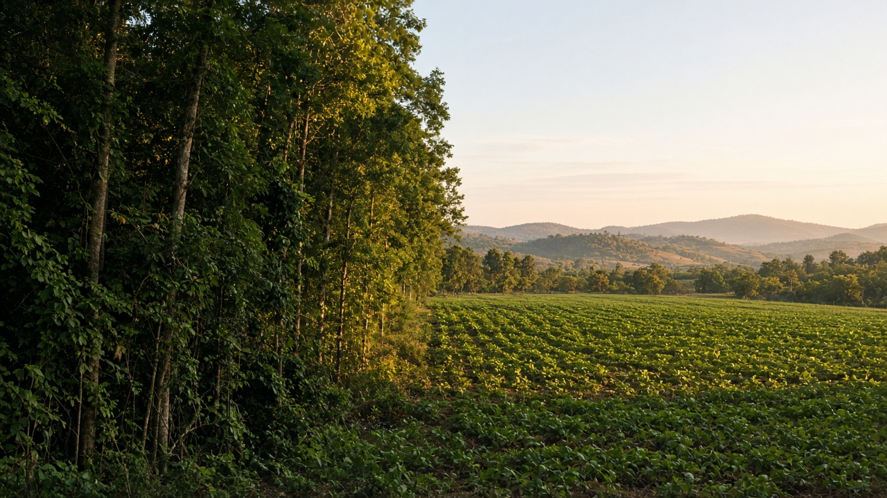
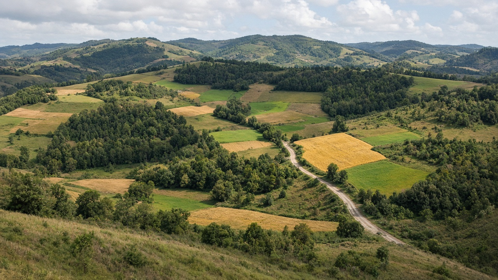
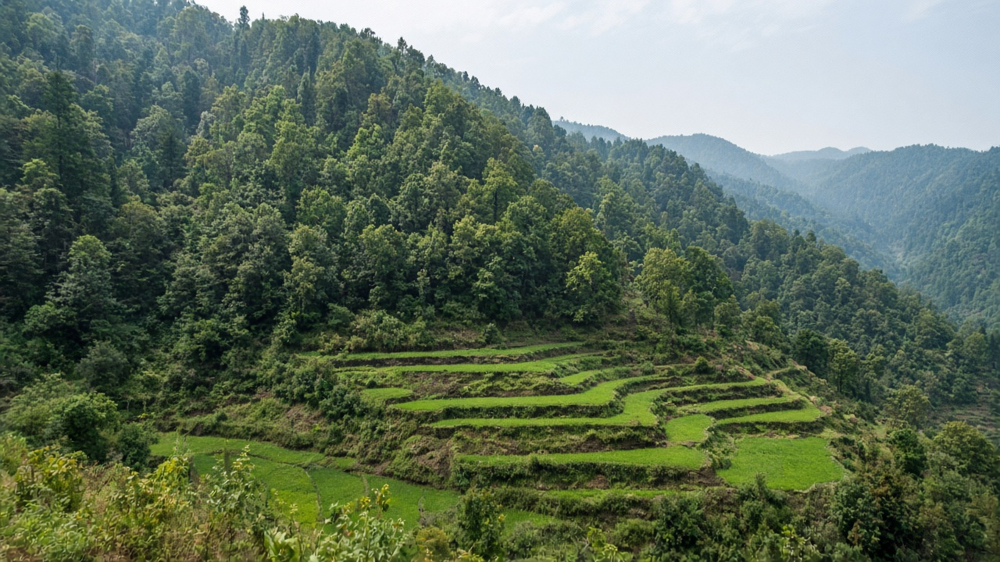

Deforestation and Land-Use Change
Published on August 20, 2026

Deforestation is the lasting conversion of forest to another land use—cropland, pasture, settlement, mining, or infrastructure—rather than a temporary opening that the canopy can close. Land-use change at landscape scale also includes the reverse: abandonment that allows secondary forest, or the replacement of native woodland with tree plantations that are legally forest but ecologically simpler. Direct drivers include agricultural expansion, timber and fuel demand, roads that open frontiers, and urban sprawl; underlying drivers include tenure insecurity, commodity prices, and weak enforcement. Once soils are ploughed or paved, seed banks, mycorrhizae, and microclimates collapse, so returning forest is slow and often incomplete. Tracking both area and the successor land use is essential, because a hectare of oil-palm, maize, or housing does not provide the same carbon, water, or wood services as the forest it replaced.
Remote sensing now maps canopy loss almost in real time, yet field work is still needed to tell harvest from conversion and to record what grew afterward. Frontier deforestation often follows roads and rivers; mosaic deforestation nibble edges around existing farms and towns. Leakage occurs when protection in one district shifts clearing to another. Fire used to clear land can escape into remaining forest, multiplying the area lost in dry years. In mountain regions, converting steep forest to rain-fed crops raises landslide and siltation risk for valleys below. National inventories that separate deforestation from degradation, and that name the replacement land use, give policy a clearer target than a single “tree cover loss” number.
Reducing deforestation means aligning food, energy, and infrastructure planning with forest retention, not only planting trees elsewhere after the fact. Secure community and smallholder tenure, agricultural intensification on already cleared land, and road design that avoids new forest frontiers lower pressure. Demand-side measures—traceable commodities, reduced waste of wood and food—complement supply-side patrols. In Nepal, historical mid-hill clearing for terrace agriculture and more recent tarai conversion illustrate how population, markets, and policy interact; community forestry later reversed canopy loss in many hills without pretending that every converted field must return to forest. Honest land-use planning states which remaining forests will be kept, which farmlands will stay productive, and how to stop the next wave of conversion rather than only mourning the last one.

वन फँडानी भनेको वनलाई अर्को भू-प्रयोग—बाली जमिन, खर्क, बस्ती, खानी वा पूर्वाधार—मा दिगो रूपान्तरण हो, छानो बन्द गर्न सक्ने अस्थायी खाली ठाउँ होइन। परिदृश्य स्तरको भू-प्रयोग परिवर्तन उल्टो पनि समावेश गर्छ: द्वितीयक वन आउन दिने त्याग, वा कानुनी रूपमा वन तर पारिस्थितिक रूपमा सरल वृक्षारोपणले मूल वुडल्यान्ड बदल्ने। प्रत्यक्ष चालकमा कृषि विस्तार, काठ र इन्धन माग, सीमा खोल्ने सडक र शहरी फैलावट पर्छन्; अन्तरनिहित चालकमा स्वामित्व असुरक्षा, वस्तु मूल्य र कमजोर प्रवर्तन पर्छन्। माटो जोतिएपछि वा पक्की भएपछि बीउ बैंक, माइकोराइजा र सूक्ष्म जलवायु ढल्छन्, त्यसैले वन फर्किनु सुस्त र प्रायः अपूर्ण हुन्छ। क्षेत्रफल र उत्तराधिकारी भू-प्रयोग दुवै ट्र्याक गर्नु आवश्यक छ, किनभने तेल पाम, मकै वा आवासको एक हेक्टरले बदलेको वनजत्तिकै कार्बन, पानी वा काठ सेवा दिँदैन।
सुदूर संवेदनले अहिले लगभग वास्तविक समयमा छानो हानि नक्सा गर्छ, तर कटान र रूपान्तरण छुट्याउन र पछि के बढ्यो रेकर्ड गर्न अझै क्षेत्र कार्य चाहिन्छ। सीमा फँडानी प्रायः सडक र नदी पछ्याउँछ; मोज़ेक फँडानी अवस्थित खेत र सहर वरिपरि किनारा कुत्क्याउँछ। एउटा जिल्लामा संरक्षण गर्दा अर्कोमा फँडानी सर्दा चुहावट हुन्छ। जमिन सफा गर्न प्रयोग भएको आगो सुख्खा वर्षमा बाँकी वनमा पस्न सक्छ, हारिएको क्षेत्र गुणन गर्छ। पहाडी क्षेत्रमा भिरालो वनलाई वर्षा निर्भर बालीमा बदल्दा तल्लो उपत्यकाका लागि पहिरो र गाद जोखिम बढ्छ। फँडानीलाई क्षयबाट छुट्याउने र प्रतिस्थापन भू-प्रयोग नाम दिने राष्ट्रिय सूचीले एउटै “रूख आवरण हानि” संख्याभन्दा नीतिलाई स्पष्ट लक्ष्य दिन्छ।
वन फँडानी घटाउनु भनेको खाना, ऊर्जा र पूर्वाधार योजनालाई वन राख्नेसँग मिलाउनु हो, पछि अन्यत्र रूख रोप्नु मात्र होइन। सुरक्षित सामुदायिक र साना किसान स्वामित्व, पहिले नै फँडानिएको जमिनमा कृषि तीव्रता, र नयाँ वन सीमा छल्ने सडक डिजाइनले दबाब घटाउँछन्। माग-पक्ष उपाय—पत्ता लाग्ने वस्तु, काठ र खानाको फोहोर कमी—आपूर्ति-पक्ष गस्ती पूरक गर्छन्। नेपालमा मध्य पहाडका गरा कृषि लागि ऐतिहासिक फँडानी र हालैको तराई रूपान्तरणले जनसंख्या, बजार र नीति कसरी अन्तरक्रिया गर्छन् देखाउँछन्; पछि सामुदायिक वनले धेरै पहाडमा छानो हानि उल्ट्यायो, प्रत्येक रूपान्तरित खेत वनमा फर्कनुपर्छ भनी नभनी। इमानदार भू-प्रयोग योजना बाँकी कुन वन राखिने, कुन खेत उत्पादक रहने, र पछिल्लो लहरमा मात्र शोक नगरी अर्को रूपान्तरण लहर कसरी रोक्ने भन्छ।

वन कटाई वन का दूसरे भू-उपयोग—फसल भूमि, चरागाह, बस्ती, खनन या अवसंरचना—में स्थायी रूपांतरण है, छत्र बंद कर सकने वाली अस्थायी रिक्ति नहीं। परिदृश्य पैमाने का भू-उपयोग परिवर्तन उलटा भी शामिल करता है: द्वितीयक वन आने देने वाला त्याग, या कानूनी रूप से वन पर पारिस्थितिक रूप से सरल वृक्षारोपण से मूल वुडलैंड बदलना। प्रत्यक्ष चालकों में कृषि विस्तार, काष्ठ और ईंधन माँग, सीमा खोलती सड़कें और शहरी फैलाव आते हैं; अंतर्निहित चालकों में स्वामित्व असुरक्षा, वस्तु कीमतें और कमज़ोर प्रवर्तन आते हैं। मिट्टी जुताई या पक्की होने के बाद बीज बैंक, माइकोराइज़ा और सूक्ष्म जलवायु ढहते हैं, इसलिए वन लौटना धीमा और अक्सर अधूरा होता है। क्षेत्रफल और उत्तराधिकारी भू-उपयोग दोनों ट्रैक करना ज़रूरी है, क्योंकि तेल पाम, मक्का या आवास का एक हेक्टेयर बदले वन जितनी कार्बन, जल या काष्ठ सेवा नहीं देता।
सुदूर संवेदन अब लगभग वास्तविक समय में छत्र हानि नक्शा करता है, पर कटाई और रूपांतरण अलग करने तथा बाद में क्या उगा रिकॉर्ड करने के लिए अभी क्षेत्र कार्य चाहिए। सीमा कटाई अक्सर सड़क और नदी का अनुसरण करती है; मोज़ेक कटाई मौजूदा खेतों और कस्बों के किनारे कुतरती है। एक ज़िले में संरक्षण से दूसरे में कटाई सरकने पर रिसाव होता है। भूमि साफ़ करने को प्रयुक्त आग शुष्क वर्षों में शेष वन में घुस सकती है, हारा क्षेत्र गुणित करती है। पर्वतीय क्षेत्रों में खड़ी वन को वर्षा निर्भर फसल में बदलने से नीचे घाटियों के लिए भूस्खलन और गाद जोखिम बढ़ता है। कटाई को क्षय से अलग करने और प्रतिस्थापन भू-उपयोग नाम देने वाली राष्ट्रीय सूची एक “वृक्ष आवरण हानि” संख्या से नीति को स्पष्ट लक्ष्य देती है।
वन कटाई घटाना खाद्य, ऊर्जा और अवसंरचना योजना को वन रखने से मिलाना है, बाद में अन्यत्र वृक्ष रोपना भर नहीं। सुरक्षित सामुदायिक और छोटे किसान स्वामित्व, पहले से कटी भूमि पर कृषि तीव्रता, और नई वन सीमाएँ टालती सड़क डिज़ाइन दबाव घटाते हैं। माँग-पक्ष उपाय—पता लगाने योग्य वस्तुएँ, काष्ठ और भोजन अपव्यय कमी—आपूर्ति-पक्ष गश्त की पूरक करते हैं। नेपाल में मध्य पहाड़ी छत कृषि के लिए ऐतिहासिक कटाई और हालिया तराई रूपांतरण दिखाते हैं कि जनसंख्या, बाज़ार और नीति कैसे अंतःक्रिया करते हैं; बाद में सामुदायिक वन ने कई पहाड़ियों में छत्र हानि उलटी, यह दावा किए बिना कि प्रत्येक रूपांतरित खेत वन में लौटे। ईमानदार भू-उपयोग योजना कहती है कौन से शेष वन रखे जाएँगे, कौन सी कृषि भूमि उत्पादक रहेगी, और पिछली लहर पर केवल शोक करने के बजाय अगली रूपांतरण लहर कैसे रोकी जाएगी।